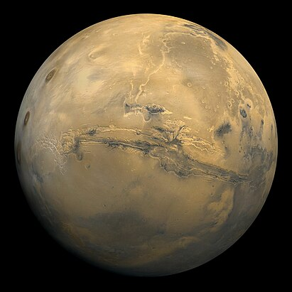
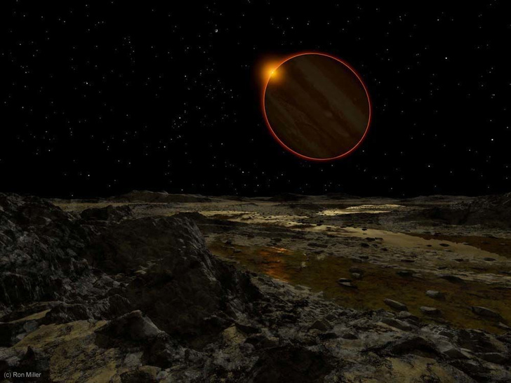

0,055274 земной
0,147 земной

0,815 земных
0,902 земных

148 940 000 км² суша (29,2 %)
361 132 000 км² вода (70,8 %)
0,107 земной
0,283 земной

317,8 земных
121,9 земных
.png)
95,2 земных
_-_JPEG_converted.jpg)
14,54 земных
15,91 земных
17,147 земных
| Фото | Названия | Порядковый номер расположения от Солнца | Вид на Cолнце с планет солнечной системы | Масса | Величина | Wikipedia |
|---|---|---|---|---|---|---|
|
Меркурий | 1-й | 3,33022⋅1023 кг 0,055274 земной |
7,48⋅107 км2 0,147 земной |
Wikipedia | |
|
Венера | 2-й | 4,8675⋅1024 кг 0,815 земных |
4,60⋅108 км² 0,902 земных |
Wikipedia | |
|
Земля | 3-й | 5,9726⋅1024 кг (3⋅10-6 M☉) | 510 072 000 км² 148 940 000 км² суша (29,2 %) 361 132 000 км² вода (70,8 %) |
Wikipedia | |
|  | Марс | 4-й | 6,4171⋅1023 кг 0,107 земной |
1,4437⋅108 км² 0,283 земной |
Wikipedia | |
|
Юпитер | 5-й |  | 1,8986⋅1027 кг 317,8 земных |
6,21796⋅1010 км² 121,9 земных |
Wikipedia |
|
Сатурн | 6-й | 5,6846⋅1026 кг 95,2 земных |
4,272⋅1010 км² | Wikipedia | |
|
Уран | 7-й | 8,6813⋅1025 кг 14,54 земных |
8,1156⋅109 км² 15,91 земных |
Wikipedia | |
| Нептун | 8-й | 1,02409⋅1026 кг 17,147 земных |
7,6408⋅109 км² | Wikipedia | ||
| Плутон | 9-й | (1,303±0,003)⋅1022 кг | 17,7 млн км² | Wikipedia |